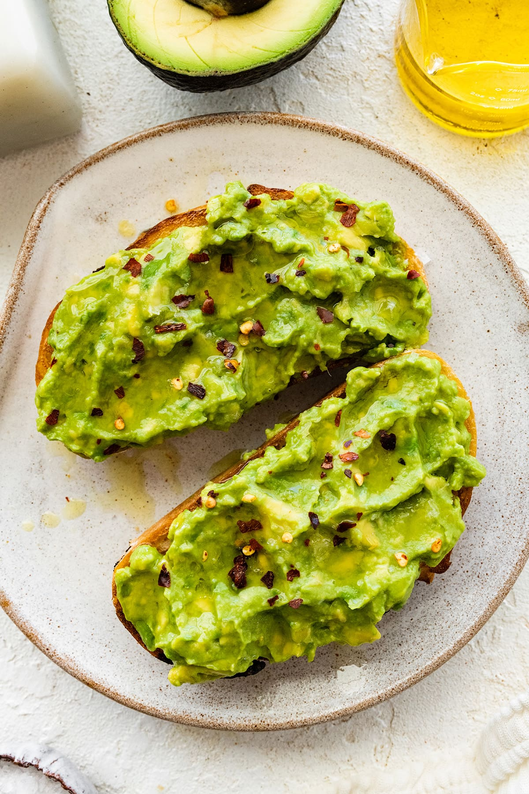

Scrambled Eggs

Ingredients:
- 2 large eggs
- 1 tablespoon butter
- Salt to taste
- Pepper to taste
- Optional: A splash of milk or cream for creamier eggs
Instructions:
Step 1: Crack the eggs into a bowl and season with a pinch of salt and pepper. Whisk until combined.
Step 2: Heat butter in a skillet over medium heat. Once melted, pour in the eggs.
Step 3: Stir the eggs gently with a spatula as they cook for about 2-3 minutes until just set. Serve immediately!
Pancakes

Ingredients:
- 1 cup all-purpose flour
- 2 tablespoons sugar
- 1 tablespoon baking powder
- 1/2 teaspoon salt
- 1 cup milk
- 1 large egg
- 2 tablespoons melted butter
- 1 teaspoon vanilla extract
Instructions:
Step 1: In a bowl, whisk together the dry ingredients (flour, sugar, baking powder, salt).
Step 2: In another bowl, whisk the wet ingredients (milk, egg, butter, vanilla).
Step 3: Combine the wet and dry ingredients, stirring gently until mixed. Do not overmix.
Step 4: Heat a non-stick skillet over medium heat and lightly grease it. Pour 1/4 cup of batter onto the skillet for each pancake.
Step 5: Cook for 1-2 minutes until bubbles form, then flip and cook for another 1-2 minutes until golden brown. Serve with syrup and toppings.
Avocado Toast

Ingredients:
- 1 ripe avocado
- 2 slices of bread (whole grain or sourdough)
- 1 tablespoon olive oil (optional)
- Salt and pepper to taste
- Red pepper flakes (optional, for extra flavor)
Instructions:
Step 1: Toast the bread slices to your desired crispiness.
Step 2: While the bread is toasting, cut the avocado in half, remove the pit, and scoop out the flesh. Mash it with a fork in a bowl.
Step 3: Spread the mashed avocado onto the toasted bread. Drizzle with olive oil and season with salt, pepper, and red pepper flakes.
Step 4: Serve immediately and enjoy!